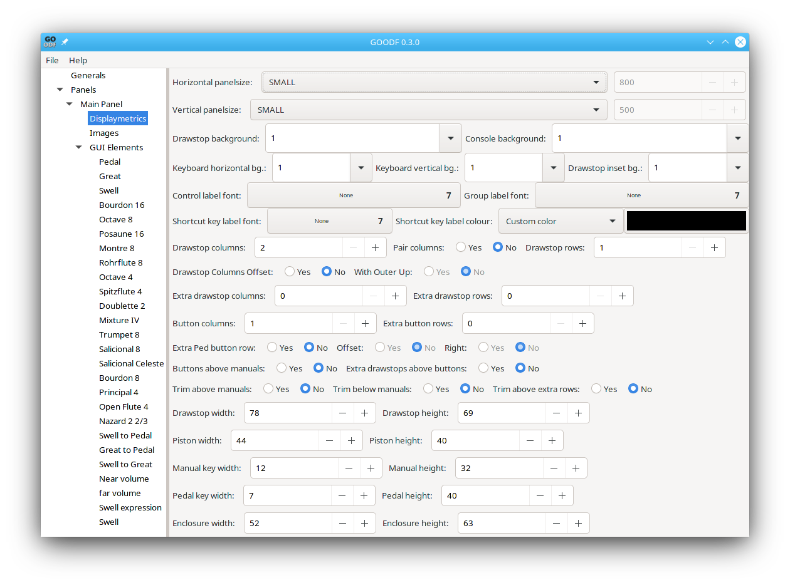
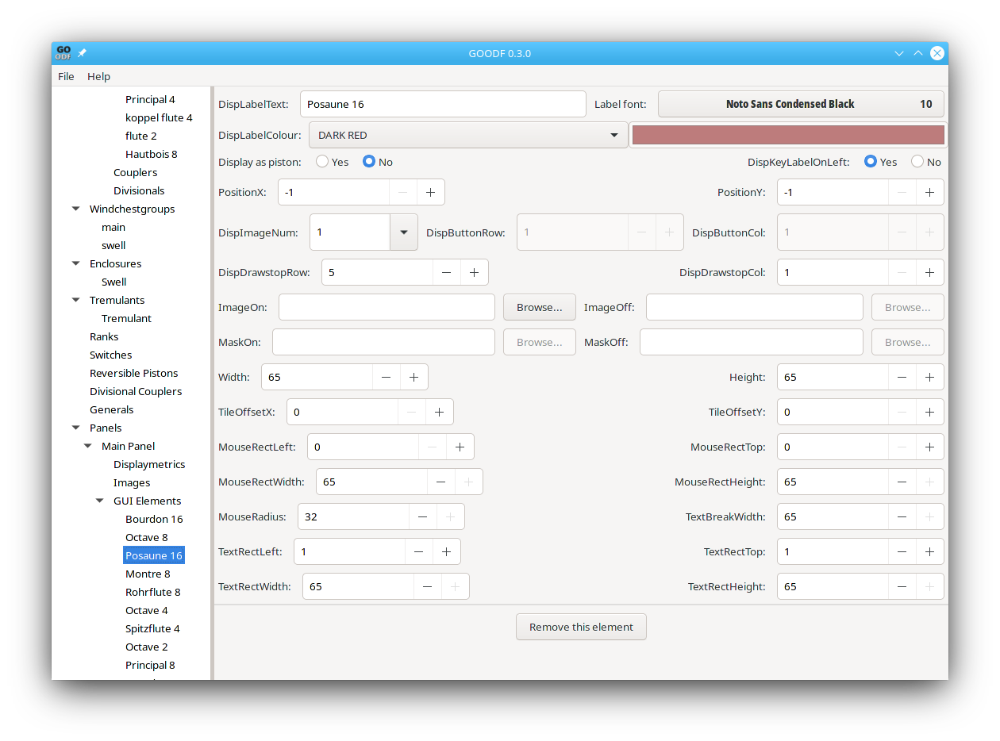

To create a simple Organ GUI, using the main panel only, without generals or divisionals, using graphical elements internal to GrandOrgue you follow the following steps:
You will have created manuals as objects earlier. For each manual, edit its parameters:
Number of accessible keys 32 for pedals and 61 for manuals,, typically
MIDI input number 1 for pedal, 2 for the first manual(typically Choir or Great), and so on
You will have created enclosures, stops, couplers and tremulants.
If you have a pedal, it must be the first manual you create, and you must check the This manual is the pedal box
If you now click on the Main Panel object in the object tree at the left of the GOODF window, you will see all of those elements in the Available Organ Elements list. If you have a pedal click the Has Pedal Yes Radio button. Then select all of the available Organ Elements and click the Create a GUI element of any selected item above button. Note that you can also create one or more ODF Label GUI Elements useful for labeling drawstop columns or creating A maker label for your organ GUI
You will then see the object tree populated with these new GUI elements. If you click on any of these GUI elements the GOODF program will show a window with all the available parameters for that GUI object.
Before dealing with the individual GUI elements, we first need to set the Main panel Displaymetrics, by clicking on that Item in the object tree. You will see the following window:

It is here that you set the size of your panel with Horizontal panelsize, and Vertical panelsize. Also you use the pulldowns to set the colors and patterns of wood used on the panel. The pulldowns for the 5 different background areas of your panel show numbers, but when you click on them they pull down images from which you can select.
Most of the remaining parameters can be left as they are, unless you are using custom Graphics. But it still remains to set up how your stops knobs and buttons will be displayed
For drawstops the parameters do the following:
Drawstop columns sets the number of columns available for adding drawstops. Since these are distributed equally on each side of the keyboards, it must be an even number. Columns are numbered from the left
Drawstop rows sets the number of rows. So if you have 50 such GUI elements to place in four columns, you need at least 50/4=13 rows. Rows are numbered from the top down
Pair Columns, if set to yes groups columns 1,2; 3,4; etc closer to each other with a wider gap between 2 and three. This is useful when you are using two columns for one manual’s stops.
Drawstop Columns Offset will offset the one column of a pair half a row below a second column, as is often seen in large organ consoles. With Outer Up ensures that this offset is such that the outermost columns are offset up, that is, columns 1 and 4 if 4 columns are defined will be offset up. With Outer Up set to no, the inner column (2,3) are offset up.
Extra Drawstop columns, allows you to enter the number of drawstop columns you want above the manuals. Similarly for Extra Drawstop Rows. The extra columns begin their numbering with 100.
Similar parameters are available to choose the rows and columns for buttons, and to set the position of buttons relative to keyboards and to extra stop rows.
You can set Default fonts here. The Control Label Font is used for Stops, Tremulants, Switches, buttons, and couplers. The Group Label Font is used for labels.
The manuals will organize their own position if you don’t change their default parameters, which is what you want unless you are creating your own manual graphics. The same is true for expression elements. However The order of appearance of manuals is from the bottom up, and they appear in the order in which you created their GUI elements. Also make sure that the Panel has its Has Pedal radio button properly configured.
What remains , then is placing Stops, Switches, Tremulants,Couplers, Labels, and general and divisional buttons. At the moment manuals appear from the bottom up in the order in which you add their GUI element to the Panel. If you make a mistake you can delete the manual GUI elements and re-add them in the correct order. Note, if you have a Pedal, it must be added before the other manuals.
Remember as you are placing the elements that it is not enough to enter a number or numbers in a data entry box, then click on the next GUI element. You need to exit each data entry block with a tab or a mouse click in order for the number to stick. If you don’t do this you number won’t take, and you will find yourself doing lots of rework.
Each Stop, Switch, and Tremulant GUI element is configured by clicking on it in the object tree at the left of the GOODF window to bring up its parameter window which looks like this:

The following parameters should usually be changed:
DisplayLabelText: If you don’t enter anything here the name of the Stop, Tremulant, or Switch entered when you created it will automatically apply. You may however want to add a different name, put the name in ALL CAPS, or add spaces to allow a line break so that the name fits within the stop’s DisplayImage.
Labelfont: this is a pulldown of all available fonts. You only need to specify if you want a different font than you set as the Control Label Font in the DisplayMetrics window
DisplayLabelColour: Select the colour for the text from the pulldown or select Custom Color and then click on the color sample to the right to pop up a color selector window. You can pick one of the predefined colors from this window, or click on the + sign in this window to define a new custom color which can then be selected.
DisplayImageNum: This is a pulldown that shows the available Images built into GrandOrgue for drawstops.
PositionY DisplayDrawstopRow and DisplayDrawstopColumn set the Row and column for the drawstop. These are only active if PositionX and PositionY are set to -1.
Custom drawstops and locations are easy to create. At a minimum you need to have an image for the stop being on, and an image for it off. You can browse for these images. The dimensions for stops may need to be changed to allow proper spacing of rows and columns. Also note that if you want a custom location, you need to set PositionX and PositionY to values other than -1.
If your custom drawstop images include the name of the stop, set TextBreakWidth equal to zero to keep your graphic from being overwritten by the DisplayLabelText. Otherwise this parameter sets the maximum length of text for a drawstop before it is wrapped to the next line
You can use labels to add an Organ Name label, or to label the stop columns with the manual they are controlling. To that end, the Labels can be positioned at the top or bottom of the Columns by setting Free X pos and Free Y pos to no. This enables the DispDrawstopCol data entry, to select the stop column; the At top of drawstop columns to select top or bottom location; and Span Column to right, if you have paired drawstop columns and you want the label centered above two paired columns.
DispImageNum is a pulldown that shows the built in label graphics from GrandOrgue. Note that if you select one the Width and Height boxes are filled in with the correct number of pixels. Some labels are bigger than others in one or more dimensions. You can also specify your own image for a label and manually set its position, the same as you could for the control elements in the Panel's Displaymetrics window.